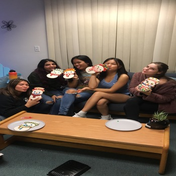
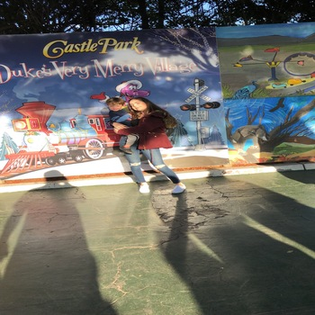

Melissa Bennett
Enter bio here
I am currently working on my sociology degree to become a social worker. I am currently 19 years old
completing my first year of college at the University of California, Riverside. I look forward to becoming a social worker
as I was a former foster youth child. I am excited to keep expanding my knowledge and learning at the University of California,Riverside.
I am exited to engage in new surrounding as well as meet new people and make new friends. I am also thinking about becoming
a foster parent because I feel that I can provide for a foster child. Being a social worker will help strengthen my abilities
as a person to always provide and care for others. I occasionally babysit when I go home on the weekends and holidays. I enjoy
babysitting because I love babies and it brings happiness to my life. I look forward to the new adventures that are to come.
Experience
Volunteered at an Elemetary School
• Read books to students
• Coached at basketball
• Helped with arts and crafts
Teacher's Aid
• Graded papers
• Sorted papers
• Walked around and helped students with math homework
• Hole punched and stapled papers
Education
UC Riverside
University of California Riverside
University of California Riverside
Portfolio

